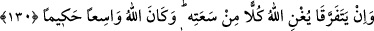

Muaz (r.a.)’ın iki hanımı vardı. Nöbeti onlardan birinin yanında olduğu zaman
diğerinin evinde abdest almazdı. İki hanımı da vebâdan öldü ve ikisini de bir kabre
defnetti.
“Eğer arayı düzeltir,” yapmış olduğunuz fenalıktan vazgeçer gelecekte de böyle bir
şeye meyletmekten, “günahtan sakınırsanız Allah” geçmişteki meylinizden dolayı
“şüphesiz çok bağışlayıcı ve” rahmetini size ikram ederek “esirgeyicidir.”
130- Eğer birbirinden ayrılırlarsa Allah, bol nîmetinden her birini zenginleştirir;
Allah’ın lütfu geniş, hikmeti büyüktür.
“Eğer” aralarında barış veyâ benzeri bir şeyle uyum sağlamak husûsunda
anlaşamayarak “birbirinden ayrılırlarsa Allah, bol nîmetinden” zenginlik ve
kudretinden “her birini zenginleştirir.” Yâni her birini diğerine muhtaç eylemez,
işlerinde ona yeter. Burada her birinin diğerine rağmen ayrılması kınanmaktadır.
“Allah’ın lütfu geniş, hikmeti büyüktür.” Yâni fiillerinde ve hükümlerinde muktedir
ve hepsini sapasağlam yapandır. Allah, hükmettiği bu ayrılıkta da tam hikmet sahibidir.
Onların her biri için kendisinde sükûnete ulaşacağı yeni eşler bahşeder de onlar ilk
eşinin hasretinden bununla teselli bulur, kalbindeki eski sevgisinin ateşi gider ve aşkının
kederi izâle olur.
Mü’mine gereken, nefsinin hazzını terketmek, bütün işlerinde, verdiği hükümlerde
Allah’ın emrine uygun hareket etmek, ve kadınlar hakkındaki Allah Teâlâ’nın “Ya
iyilikle tutun ya da güzellikle salıverin.” (Bakara, 2/229) emri ile amel etmektir.
Bunun mânâsı ise alış veriş ve dostluğun olmadığı kıyamet günü gelmeden önce adâlet
canibine meyletmek, zulüm ve benzeri kötülüklerden yüz çevirmektir.
İbn Mes’ûd (r.a.) şöyle demiştir: “Kıyâmet günü kulun elinden tutulup önce ve sonra
gelenlerin, yâni bütün insanların huzûruna çıkarılır. Daha sonra bir münâdî şöyle
seslenir: “Bu, falan oğlu falandır. Kimin bunda hakkı varsa gelsin, alsın.” Bunun üzerine
kadın; oğlunun, kardeşinin, babasının ve kocasının üzerinde hakkı olduğunu düşünerek
sevinir. Sonra İbn Mes’ûd (r.a.) şu âyeti okudu: “O gün aralarında akrabalık yoktur
ve birbirlerini de soramazlar.” (Mü’minûn, 23/101)
Allah Teâlâ kula: “Bunlara hakkını ver” der. Kul “Allah’ım ben dünyâda değilim.
Nereden vereyim?” diye cevap verir. Allah da meleklere: “Onun iyi amellerinden alın
ve (hakkı olan) insanlara talepleri kadar verin.” buyurur.
Eğer o kimse Allah dostu ise, onun hardal tanesi kadar bile hayrı varsa, Allah o iyiliği
artırarak o kimseyi cennete girdirir. Sonra İbn Mes’ûd (r.a): “Allah bir zerre miktarı
zulmetmez. Şayet (kişinin yaptığı iyilik) bir tane ise onu katlar ve katından büyük
bir ecir verir.” (Nisa, 4/40) âyetini okudu.